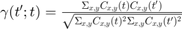
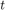
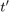
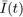
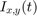

function [gamma] = imageCorrelation(I1,I2)
%IMAGECORRELATION - quantify the simularity of I1 with respect to I2 % % This function computes the "cross-correlation" as defined by Kwon et % al. (see ref. below. The first image, I1, is a reference image. The % reference image is compared to I2. If I2 is a stack of images, then a % gamma is calculated for each I2 slice with resplect ot I1. If I1 is a % stack, then the mean of I1 is used as the image to compare with I2. % %

does this really work \begin{equation}\label{eq: xCorrDef}
\end{equation}
where C is the contrast at times  and . The contrast is given by: \begin{equation}\label{(eq: contrastDef)} C_{x,y} = \frac{I_{x,y}(t) - \bar{I}(t)}{\bar{I}(t)} \end{equation} where  is the mean of .
Syntax: [gamma] = imageCorrelation(I1,I2);
Inputs: I1 - reference image(s) I2 - image(s) to compare to reference
Outputs: gamma - "cross-correlation" value
Example: Line 1 of example Line 2 of example Line 3 of example
Other m-files required: none Subfunctions: none MAT-files required: none
Ref: Oh Hoon Kwon, Brett Barwick, Hyun Soon Park, J. Spencer Baskin, and Ahmed H. Zewail. Nanoscale mechanical drumming visualized by 4D electron microscopy. Nano Letters, 8(11):3557–3562, 2008.
See also: CREATEIMAGESTACK, CREATEIMAGE
% Author: Dennis F Gardner % JILA, Univeristy of Colorado, 440 UCB, Boulder, CO 80309 % email: dennis.gardner@colorado.edu % Website 1: http://www.github.com/DennisFGardner % Website 2: http://www.linkedin.com/in/dennisfgardner % File Creation: Sept. 14th, 2016 %------------- BEGIN CODE -------------- % Enter your executable matlab commands here %------------- END OF CODE --------------
end